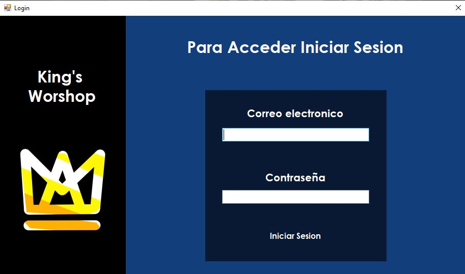
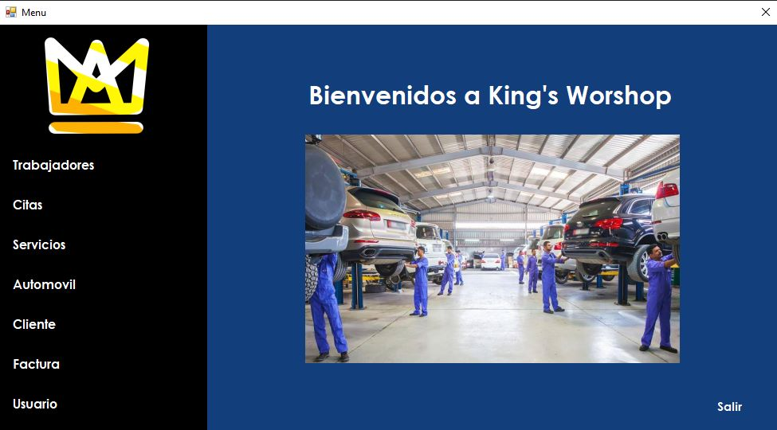
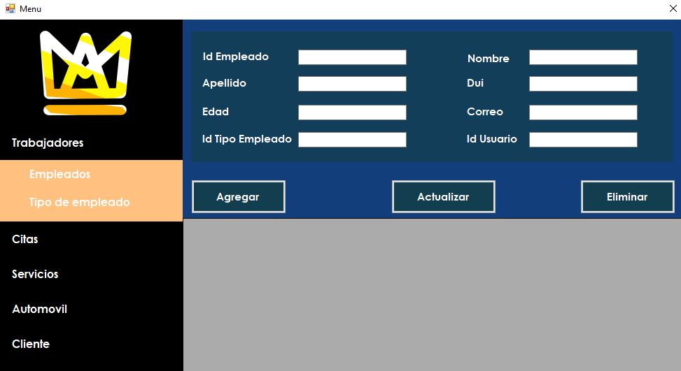
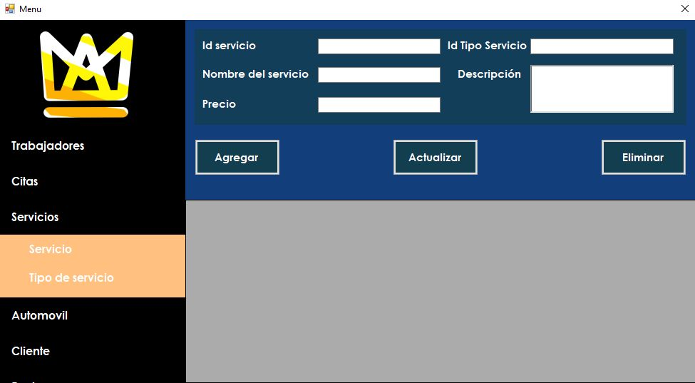

Inicio de sesión

Contará con un inicio de sesión seguro Al ingresar las credenciales correctamente se dirigirá instantáneamente a las ventana de servicio que este cuenta.
Detalles visuales
-Logo
-Bontones Funcionales
-Text-Box's
Detalles visuales
-Logo
-Bontones Funcionales
-Text-Box's
Menú Principal

En este se estarán presentando los botones de los diversos servicios con los que este cuenta para una facil gestión en la hora laboral.
Ventanas de servicio:
-Trabajadores -Automoviles
-Citas -Cliente
-Servicios -Factura
Ventanas de servicio:
-Trabajadores -Automoviles
-Citas -Cliente
-Servicios -Factura
Gestión de Empleados

Se gestionará a los usuarios que estan agregados en este apartado visualizando perfectamente los detalles personales y laborales que tengan.
Base de datos:
Si este no esta agregado a la base de datos
facilmente con las herramientas con la que cuenta
se guardará nuevos registros en una base de datos de forma práctica
Base de datos:
Si este no esta agregado a la base de datos facilmente con las herramientas con la que cuenta se guardará nuevos registros en una base de datos de forma práctica
Gestión de servicios

El usuario al momento de querer visualisar con que servicios cuenta el programa con una base de datos se mostrara los servicios agregados con sus especificaciones
Detalles visuales
El usuario al momento de querer visualisar
con que servicios cuenta el programa
con una base de datos se mostrara los servicios
agregados con sus especificaciones
Detalles visuales
El usuario al momento de querer visualisar con que servicios cuenta el programa con una base de datos se mostrara los servicios agregados con sus especificaciones